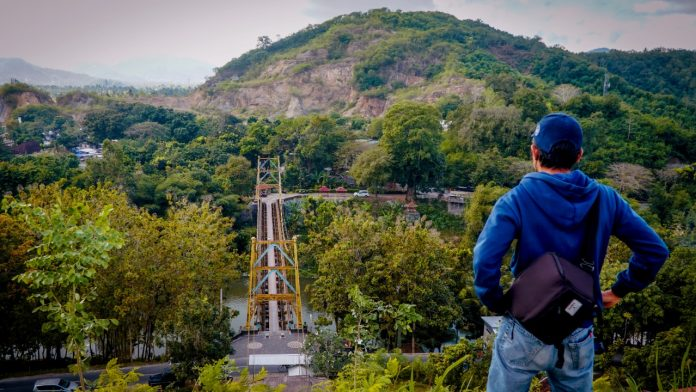

Menikmati Golden Melon di Desa Kebon Ayu Lombok Barat
Lombok Barat tidak hanya memiliki potensi desa wisata alam berupa gunung, pantai..Baca selengkapnya disini >>>

Baca selengkapnya disini >>>
Jembatan Gantung Peninggalan Kolonial Belanda di Desa Kebon Ayu Dijadikan Destinasi Wisata
Jembatan yang memiliki panjang 116 meter dan lebar 4 meter ini tidak hanya menjadi..Baca selengkapnya disini >>>

Pewaris Tenun di Kebon Ayu Dilatih Agar Berkembang
menenun di Desa Kebon Ayu, Kecamatan Gerung, Kabupaten Lombok Barat mengalami stagnasi. Regenerasinya terbatas, demikian juga kreasi tenunnya.Baca selengkapnya disini >>>